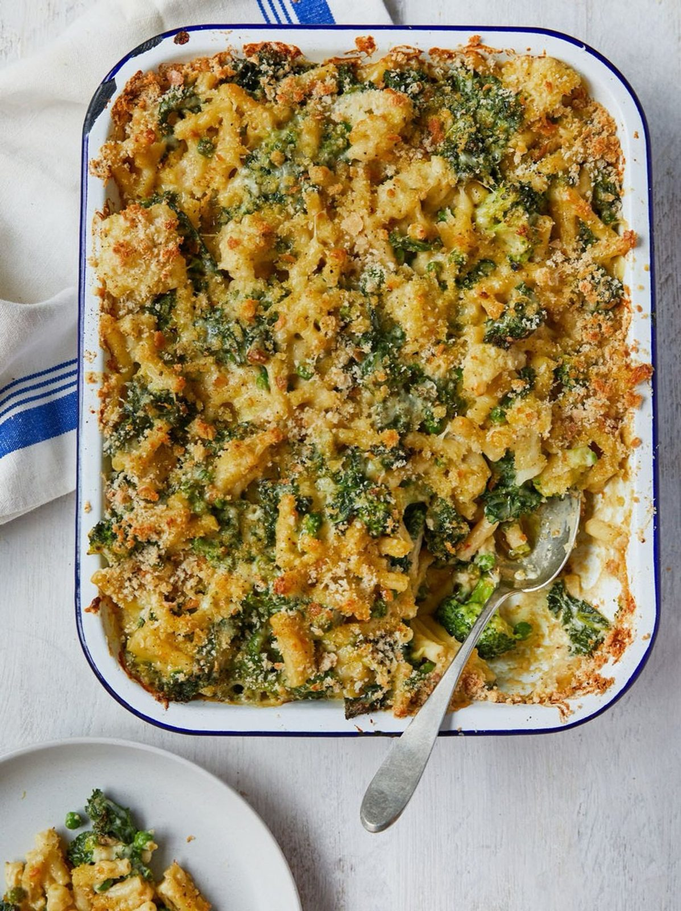

Cheesy Pasta Bake
A cross between cauliflower cheese and macaroni cheese, with greens through it and a crunchy breadcrumb top.

Before you start heat the oven to 160°C fan.
Ingredients
White sauce
Pasta bake
Method
To make the white sauce
- Melt the 75g butter in a large saucepan over a medium heat. Stir in the 75g plain flour and cook for 2 minutes, until it comes together as a smooth paste.
- Add the 1L milk a splash at a time, whisking smooth after each addition before adding the next. Simmer for 8-10 minutes, stirring, until the sauce thickly coats the back of a spoon. Season to taste.
To assemble
- Break the 500g cauliflower and broccoli into florets.
- Cook the 400g dried pasta in a large pan of boiling salted water according to the packet instructions, adding the cauliflower and broccoli for the last 4 minutes. Drain, reserving a mugful of the cooking water.
- Remove and discard any tough stalky bits from the 375g leafy or garden greens, then chop into bite-sized pieces.
- Heat the 1 tbsp olive oil in a pan large enough to hold all the ingredients, over a medium heat. Add the greens and cook for 3 minutes, until wilted.
- Add the white sauce, the 1 tsp Dijon mustard if using, and the pasta and veg. Grate in the 85g cheddar and mix everything well, loosening with a splash of the cooking water. Season to taste.
- Transfer to a large, deep roasting dish.
- Tear the 250g stale bread into small chunks and whiz to chunky crumbs in a food processor. Scatter over the top with the 30g Parmesan and season with black pepper.
- Bake at 160°C fan for 10 minutes, until golden and bubbling.
Notes
- The source lists 2 litres white base sauce without ever giving a recipe for it. The white sauce group above is a standard béchamel at half that volume; the quantities are not the source's.
- Halved from the original, which serves 12 and is written for a 60x40cm catering tray. It came from the Tesco Community Cookery School with Jamie Oliver and is designed to scale up to 50 portions.
- Works with whatever veg you have, not just cauliflower and broccoli.
Source: https://www.jamieoliver.com/recipes/pasta/cheesy-pasta-bake/